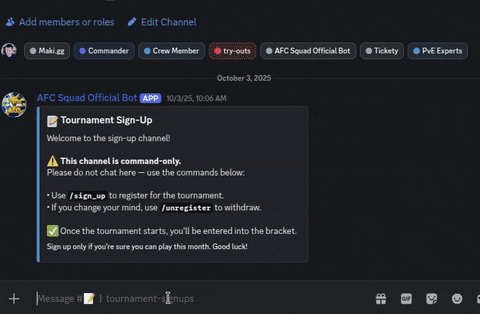
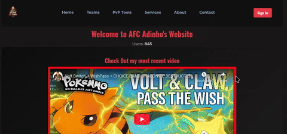
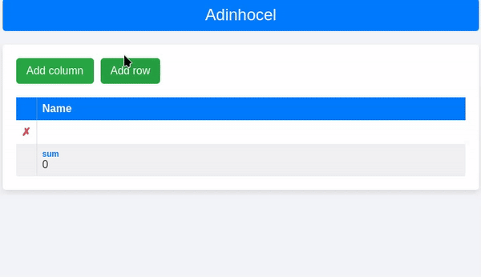

AFC Official Discord Bot

Click for demo — use /help
A custom Discord bot I built to manage my guild's discord server in an online fan-made Pokémon MMORPG.
It handles moderation, tournaments, and event reminders — all running on Python with discord.py, SQLAlchemy, and a PostgreSQL database inside Docker.
I also use Bash scripts and cron jobs to automate repetitive tasks, and the bot integrates the OpenAI API to answer questions.
Everything the community needs is just one slash command away. This bot is hosted on my Raspberry pi
AFC Adinho's Website

Click for demo
My personal website is an extension of my YouTube channel, where I share my
competitive Pokémon teams and strategies with over 7k subscribers.
It’s built with Python, Flask, and SQLAlchemy. The site fetches HTML from an external page and
scans it to find Pokémon names, then uses the PokéAPI to show their images. Users can sign up,
search, and filter through teams — and thanks to the Patreon API, paid members get extra
features. Over 800 players are currently using the website.
Adinhocel

Click for demo
I made this spreadsheet app while living with my brother — we wanted a simple way
to track shared expenses, so I built one myself. It’s built with Vue 3 and lets users add or
remove rows and columns, edit cells, and calculate quick summaries like sum, avg, max, and min.
Instead of a database, it saves data in local storage and rebuilds the table on reload — a
small, practical project that taught me a lot about reactivity and how easy it can be to create
a simple single page application.